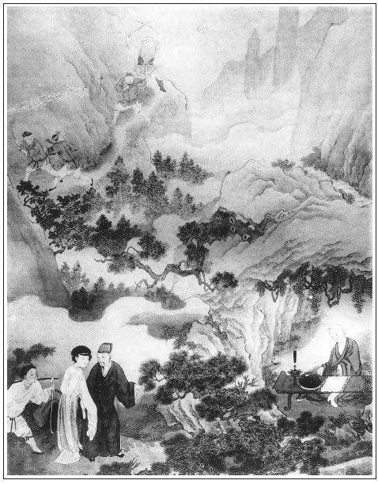

張回此回乃大書月娘之罪，以為一百回結文之定案也，以為以前凡寫月娘之罪案結穴也。夫凡寫月娘偏寵金蓮；利瓶兒牆頭之財；夜香之權詐；掃雪之趨承；處處引誘敬濟，全不防閒金蓮；置花園中金、瓶、梅於度外，一若別室之人，隨處奸險；引娼妓為女，而冷落大姐；賣富貴而攀親；宣卷唸經，吃符藥而求子；瓶兒一死，即據其財；金蓮合氣；挾制其夫；種種罪惡，不可勝數。
而總不如此回之罪為深切註明，又駕出於諸婦人之上者也。何則？夫寡婦遠行燒香之罪，已屬萬死無辭，乃以孝哥兒交與如意看養。夫西門氏無一人矣，此三尺之孤，乃西門家祖宗源遠流長，傳之於今日者也。西門在日，且當珍之保養之，不可一日離其側，況其死後乎？況有金蓮在側，官哥之前車可鑒，瓶兒之言不猶在耳乎？乃一旦遠行燒香。夫燒香非必不可辭之事，且為必不可行之事，以致太歲起釁，伯才招災，苟有人心，當不為此。況夫敬濟現在家中，即無秋菊之言，猶當早計及此。
矧秋菊言之屢屢，己又親移大姐進儀門內，而又令玳安、平安等，監其取藥與當物。今忽遠行，乃反去其監守以隨己。夫大姐在儀門裡住，則敬濟同在內廂房，以論嬌兒、玉樓等婦人，則混雜不便。使其在鋪上宿，則花園內之金鎖鑰誰收乎？以論金蓮、春梅則尤不便。況乎玳安、來安皆隨去，其餘俱在。貯許多金粉於園庭，列無數孀居於後院，一旦遠行燒香，且自己又為未亡之人，乃遠奔走於數百里之外。以禮論之，即有夫之婦，往鄰左之尼庵僧捨，亦非婦人所宜，乃岳廟燒香。噫！
月娘之罪，至此極矣。此書中之惡婦人，無過金蓮，乃金蓮不過自棄其身，以及其婢耳。未有如月娘之上使其祖宗絕祀，下及其子使之列於異端，入於空門，兼及其身幾乎不保，以遺其夫羞，且誨盜誨淫於諸妾。而雪洞一言，以其千百年之宗祀，為一夕之喜捨佈施，尤為百割不足以贖其罪也。況乎玉簫私人而不知，小玉私人而又不知；以及後來旺被逐之奴而復引入室，以致有雪娥之走；因竊玉之婚，以致平安之逃，吳典恩之丑。
一百回中，無一可恕之事。故作者特用寫後文春梅數折以丑之也。其醜之之處，其勝於殺之割之也。故曰此書中月娘為第一惡人罪人，予生生世世不願見此等男女也。然而其惡處，總是一個不知禮。夫不知禮，則其志氣日趨於奸險陰毒矣，則其行為必不能防微杜漸，循規蹈矩矣。然則不知禮，豈婦人之罪也哉？西門慶不能齊家之罪也。總之，寫金蓮之惡，蓋彰西門之惡；寫月娘之無禮，蓋罪西門之不讀書也。純是陽秋之筆。
詩曰：
一自當年拆鳳凰，至今情緒幾惶惶。
蓋棺不作橫金婦，入地還從折桂郎。
彭澤曉煙歸宿夢，瀟湘夜雨斷愁腸。
新詩寫向空山寺，高掛雲帆過豫章。

說話一日，吳月娘請將吳大舅來商議，要往泰安州頂上與娘娘進香，因西門慶病重之時許的願心。張夾不知作者必欲寫月娘至二十分不堪，卻是何恨。吳大舅道：「既要去，須是我同了你去。」一面備辦香燭紙馬祭品之物，玳安、來安兒跟隨，雇了三個頭口，月娘便坐一乘暖轎，分付孟玉樓、潘金蓮、孫雪娥、西門大姐：「好生看家，張夾歷數眾人，月娘出門之罪，不言可見。同奶子如意兒、眾丫頭好生看孝哥兒。張夾又點孝哥，月娘出門之罪，又何如？後邊儀門無事早早關了，休要出外邊去。」又分付陳敬濟：「休要那去，同傅夥計大門首看顧。我約莫到月盡就來家了。」繡眉托家緣幼子與一班異心之人，而遠出燒香，月娘殊亦愚而多事。十五日早辰燒紙通信，晚夕辭了西門慶靈，與眾姊妹置酒作別，把房門、各庫門房鑰匙交付與小玉拿著。張夾又點房門庫門，月娘之罪又何如？次日早五更起身，離了家門，一行人奔大路而去。那秋深時分，天寒日短，一日行程六七十里之地。未到黃昏，投客店村房安歇，張夾行路如此，月娘之罪可如？次日再行。一路上，秋雲淡淡，寒雁淒淒，樹木凋落，景物荒涼，不勝悲愴。
話休饒舌。一路無詞，行了數日，到了泰安州，望見泰山，端的是天下第一名山，根盤地腳，頂接天心，張夾一篇望岳賦。居齊魯之邦，有巖巖之氣象。吳大舅見天晚，投在客店歇宿一宵。次日早起上山，望岱岳廟來。那岱岳廟就在山前，乃累朝祀典，歷代封禪，為第一廟貌也。但見：
廟居岱岳，山鎮乾坤，為山嶽之尊，乃萬福之領袖。山頭倚檻，直望弱水蓬萊；絕頂攀松，都是濃雲薄霧。樓台森聳，金烏展翅飛來；殿宇稜層，玉兔騰身走到。雕樑畫棟，碧瓦朱簷，鳳扉亮隔映黃紗，龜背繡簾垂錦帶。遙觀聖像，九獵舞舜目堯眉；近觀神顏，袞龍袍湯肩禹背。御香不斷，天神飛馬報丹書；祭祀依時，老幼望風祈護福。嘉寧殿祥雲香靄，正陽門瑞氣盤旋。
正是：
萬民朝拜碧霞宮，四海皈依神聖帝。
吳大舅領月娘到了岱岳廟，正殿上進了香，張夾先寫廟中。瞻拜了聖像，廟祝道士在旁宣念了文書。然後兩廊都燒化了紙錢，吃了些齋食。然後領月娘上頂，張夾再寫上山。登四十九盤，攀籐攬葛上去。娘娘金殿在半空中雲煙深處，約四五十里，風雲雷雨都望下觀看。繡眉此山奇峻，只八字寫出。張夾奇句，又是一篇泰山賦。月娘眾人從辰牌時分岱岳廟起身，登盤上頂，至申時已後方到。娘娘金殿上朱紅牌扁，金書「碧霞宮」三字。張夾是自下望來者。進入宮內，瞻禮娘娘金身。怎生模樣？但見：
頭綰九龍飛鳳髻，身穿金縷絳綃衣。藍田玉帶曳長裾，白玉圭璋檠彩袖。臉如蓮萼，天然眉目映雲鬟；唇似金朱，自在規模端雪體。猶如王母宴瑤池，卻似嫦娥離月殿。正大仙容描不就，威嚴形象畫難成。
月娘瞻拜了娘娘仙容，香案邊立著一個廟祝道士，約四十年紀，生的五短身材，三溜髭鬚，明眸皓齒，張夾四字寫盡廟祝。頭戴簪冠，身披絳服，足登雲履，向前替月娘宣讀了還願文疏，金爐內炷了香，焚化了紙馬金銀，令小童收了祭供。原來這廟祝道士，也不是個守本分的，乃是前邊岱岳廟裡金住持的大徒弟，張夾即從岳廟引入。姓石，雙名伯才，張夾實不才也。極是個貪財好色之輩，趨時攬事之徒。這本地有個殷太歲，姓殷，雙名天錫，乃是本州知州高廉的妻弟。張夾又與《水滸》一聯合。常領許多不務本的人，或張弓挾彈，牽架鷹犬，在這上下二宮，專一睃看四方燒香婦女，繡眉據泰山而觀天下婦女，亦是奇人。人不敢惹他。張夾一個專一如此。這道士石伯才，專一藏奸蓄詐，替他賺誘婦女到方丈，任意姦淫，取他喜歡。張夾一個又專一如此。因見月娘生的姿容非俗，戴著孝冠兒，若非官戶娘子，定是豪家閨眷；又是一位蒼白髭髯老子跟隨，兩個家童，繡旁便不足畏。不免向前稽首，收謝神福：「請二位施主方丈一茶。」吳大舅便道：「不勞生受，還要趕下山去。」伯才道：「就是下山也還早哩。」繡旁款得賊。張夾直貫下半夜天明矣。
不一時，請至方丈，裡麵糊的雪白，張夾絕妙，好地面。文旁只是一個白字，便以為好地面，沒見過世面。正面放一張芝麻花坐床，張夾妙絕，好床。柳黃錦帳，張夾妙絕，好帳。香幾上供養一幅洞賓戲白牡丹圖畫，繡旁絕妙招牌。張夾又妙絕，好畫。左右一對聯，大書著：「兩袖清風舞鶴，一軒明月談經。」伯才問吳大舅上姓，大舅道：「在下姓吳，這個就是舍妹吳氏，因為夫主來還香願，不當取擾上宮。」伯才道：「既是令親，俱延上坐。」他便主位坐了，便叫徒弟看茶。原來他手下有兩個徒弟，一個叫郭守清，一個名郭守禮，皆十六歲，生得標緻，頭上戴青段道髻，身穿青絹道服，腳上涼鞋淨襪，渾身香氣襲人。繡眉以人誘人之法。張夾又寫盡好徒弟。客至則遞茶遞水，斟酒下菜。到晚來，背地便拿他解饞填餡。不一時，守清、守禮安放桌兒，就擺齋上來，都是美口甜食，蒸堞餅散，各樣菜蔬，擺滿春台。每人送上甜水好茶，吃了茶，收下家火去。就擺上案酒。大盤大碗餚饌，都是雞鵝魚鴨上來。用琥珀鑲盞，滿泛金波。吳月娘見酒來，就要起身，叫玳安近前，用紅漆盤托出一疋大布、二兩白金，與石道士作致謝之禮。吳大舅便說：「不當打攪上宮，這些微禮致謝仙長。不勞見賜酒食，天色晚來，如今還要趕下山去。」慌的石伯才致謝不已，說：「小道不才，娘娘福蔭，在本山碧霞宮做個住持，仗賴四方錢糧，不管待四方財主，作何項下使用？今聊備粗齋薄饌，倒反勞見賜厚禮，使小道卻之不恭，受之有愧。」辭謝再三，方令徒弟收下去。一面留月娘、吳大舅坐：「好歹坐片時，略飲三杯，盡小道一點薄情而已。」吳大舅見款留懇切，不得已和月娘坐下。
不一時，熱下飯上來。石道士分付徒弟：「這個酒不中吃，另打開昨日徐知府老爺送的那一壇透瓶香荷花酒來，張夾出語是天錫處勢頭。與你吳老爹用。」不一時，徒弟另用熱壺篩熱酒上來。先滿斟一杯，雙手遞與月娘，繡眉先奉月娘，微露注意。張夾請問月娘燒香者，如此何如？月娘不肯接。吳大舅道：「舍妹他天性不用酒。」伯才道：「老夫人一路風霜，用些何害？好歹淺用些。」一面倒去半鐘，遞上去與月娘接了。又斟一杯遞與吳大舅，說：「吳老爹，你老人家試用此酒，其味如何？」吳大舅飲了一口，覺香甜絕美，其味深長，說道：「此酒甚好。」伯才道：「不瞞你老人家說，此是青州徐知府老爹送與小道的酒。他老夫人、小姐、公子，張夾絕妙稱呼。一家眷屬，皆受度脫。年年來岱岳廟燒香建醮，與小道相交極厚。張夾夫人、小姐相交極厚。他小姐、衙內又寄名在娘娘位下。見小道立心平淡，慇勤香火，一味至誠，甚是敬愛小道。張夾小姐又單愛敬也。常年，這岱岳廟上下二宮錢糧，有一半徵收入庫。近年多虧了我這恩主徐知府老爹題奏過，也不徵收，都全放常住用度，侍奉娘娘香火，餘者接待四方香客。」繡眉說老爺卻夾出夫人、小姐，說感恩卻全是自讚，又使勢，又攤眼，又奉承，語語綿裡裹針，婦女稍不見慣，未有不墜其術中者。賊道，賊道。這裡說話，下邊玳安、來安、跟從轎夫，下邊自有坐處，湯飯點心，大盤大碗酒肉，都吃飽了。
吳大舅飲了幾杯，見天晚要起身。伯才道：「日色將落，晚了趕不下山去。繡眉先說早，後說晚，絕妙騙法。張夾與下山還早一映。倘不棄，在小道方丈權宿一宵，張夾不棄小道妙甚。然則不棄小僧矣。明早下山從容些。」吳大舅道：「爭奈有些小行李在店內，誠恐一時小人羅皂。」伯才笑道：「這個何須掛意！決無絲毫差池。聽得是我這裡進香的，不拘村坊店面，聞風害怕，好不好把店家拿來本州來打，就教他尋賊人下落。」繡眉豈道士之言，明眼人便當看破。張夾步步是勢利。有了徐知府方有高知州，有了高知州，方有此等一輩也。吳大舅聽了，就坐住了。伯才拿大鐘斟上酒來。吳大舅見酒利害，便推醉更衣，繡旁此處還有主意。張夾亦無奈矣。遂往後邊閣上觀看隨喜去了。張夾總欲丑月娘也。這月娘覺身子乏困，便在床上側側兒。這石伯才一面把房門拽上，外邊去了。
月娘方才床上歪著，忽聽裡面響亮了一聲，床背後紙門內跳出一個人來，張夾賁四嫂不在紙門內乎？淡紅面貌，三柳髭鬚，約三十年紀，頭戴滲青巾，身穿紫錦褲衫，雙手抱住月娘，說道：「小生殷天錫，乃高太守妻弟。久聞娘子乃官豪宅眷，天然國色，思慕如渴。今既接英標，乃三生有幸，倘蒙見憐，死生難忘也。」繡眉沒頭沒腦，說得親親切切，亦大可笑。想見一輩交淺言深者，與此相類。一面按著月娘在床上求歡。月娘諕的慌做一團，高聲大叫：「清平世界，朗朗乾坤，沒事把良人妻室，強𢺞攔在此做甚！」就要奪門而走。被天錫抵死攔擋不放，便跪下說：「娘子禁聲，張夾比王婆炕上何如？下顧小生，懇求憐允。」繡旁不像太歲。那月娘越高聲叫的緊了，口口大叫：「救人！」平安、玳安聽見是月娘聲音，慌慌張張走去後邊閣上，叫大舅說：「大舅快去，我娘在方丈和人合口哩。」張夾不知合那一口？這吳大舅慌的兩步做一步奔到方丈推門，那裡推得開。只見月娘高聲：「清平世界，攔燒香婦女在此做甚麼？」這吳大舅便叫：「姐姐休慌，我來了！」一面拿石頭把門砸開。那殷天錫見有人來，撇開手，打床背後一溜煙走了。原來這石道士床背後都有出路。
吳大舅砸開方丈門。問月娘道：「姐姐，那廝玷污不曾？」月娘道：「不曾玷污。那廝打床背後走了。」吳大舅尋道士，那石道士躲去一邊，只教徒弟來支調。大舅大怒，喝令手下跟隨玳安、來安兒把道士門窗戶壁都打碎了。一面保月娘出離碧霞宮，上了轎子，便趕下山來。張夾如此方好過入普淨。
約黃昏時分起身，走了半夜，方到山下客店內。繡眉一婦人、一老子，半夜在泰山頂上逃難，危甚，險甚。此是燒香下場頭。如此這般，告店小二說。小二叫苦連聲，說：「不合惹了殷太歲，他是本州知州相公妻弟，有名殷太歲。你便去了，俺開店之家，定遭他凌辱，怎肯干休！」吳大舅便多與他一兩店錢，取了行李，保定月娘轎子，急急奔走。後面殷天錫氣不捨，率領二三十閒漢，各執腰刀短棍，趕下山來。
吳大舅一行人，兩程做一程，約四更時分，趕到一山凹裡。遠遠樹木叢中有燈光，走到跟前，卻是一座石洞，裡面有一老僧秉燭唸經。張夾峰迴路轉，卻是如此悠然。吳大舅問：「老師，我等頂上燒香，被強人所趕，奔下山來，天色昏黑，迷蹤失路至此。敢問老師，此處是何地名？從那條路回得清河縣去？」張夾忽出「清河縣」三字，為月娘喜，為西門哭。老僧說：「此是岱岳東峰，這洞名喚雪澗洞。貧僧就叫雪洞禪師，法名普靜，張夾雪能淨諸花故也。薛嫂，薛尼何如此名。在此修行二三十年。你今遇我，實乃有緣。張夾二語直入。休往前去，山下狼蟲虎豹極多。明日早行，一直大道就是你清河縣了。」吳大舅道：「只怕有人追趕。」老師把眼一觀說：「無妨，那強人趕至半山，已回去了。」因問月娘姓氏。吳大舅道：「此乃吾妹，西門慶之妻。因為夫主，來此進香。得遇老師搭救，恩有重報，不敢有忘。」於是在洞內歇了一夜。張夾撇卻道士，來尋和尚，然則真是不棄小僧耳。
次日天不亮，月娘拿出一疋大布謝老師。老師不受，說：「貧曾只化你親生一子作個徒弟，張夾近來化者只化一個徒弟去生一子。你意下何如？」繡眉似說破，又似不說破，此書妙處，只是一冷。吳大舅道：「吾妹止生一子，指望承繼家業。若有多餘，就與老師作徒弟。」月娘道：「小兒還小，今才不到一週歲兒，如何來得？」老師道：「你只許下，我如今不問你要，過十五年才問你要哩。」張夾自「熱結」到死時，不三五年。自此日至幻化乃十五年。遲疾都妙。月娘口中不言，過十五年再作理會，遂含糊許下老師。張夾非結十五年，乃開下十六回之事也。一面作辭老師，竟奔清河縣大道而來。正是：
世上只有人心歹，萬物還教天養人。
但交方寸無諸惡，狼虎叢中也立身。
文回文禹門云：泰山燒香，乃是月娘大錯處。不帶僕婦丫頭，亦是作者漏洞處。或者破落戶，暴發戶家作事，大半如斯，亦未可定。獨是官哥前車之鑒，亦月娘之所深知，且有如意在旁，豈有不詳述者，乃竟孤身上路，雖臨行囑咐再三，亦奚益哉？可謂糊塗極矣。受此一番強暴，非所辱月娘，正所以警月娘也。孝哥無恙，月娘歸家，欣幸之中，能勿悔懼乎？諺有云：不見棺材不掉淚，不到黃河不死心。正為愚人言之也。雖然，前不受來保之誘，後能拒天錫之強，略短取長，論人觀其大節，月娘正未可厚非。何西門慶竟有不淫之妻哉？
批書者默默不讚一詞，豈猶有餘恨乎？吁嗟乎！此刻西門慶家中，李嬌兒無論矣，孟玉樓去志已堅，不過待時而動，孫雪娥自有別腸，潘金蓮一味宣淫，不但不思前，並不慮後，春梅早有散局在腦中，迎春、玉簫已去。其在外者，桂兒、銀兒、月兒，另有新歡。其可以稱為西門慶之人者，月娘而已。謂予不信，請看下文。